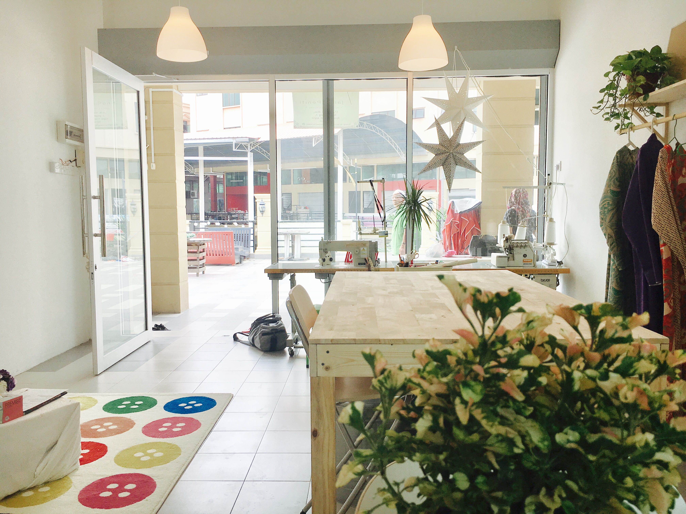
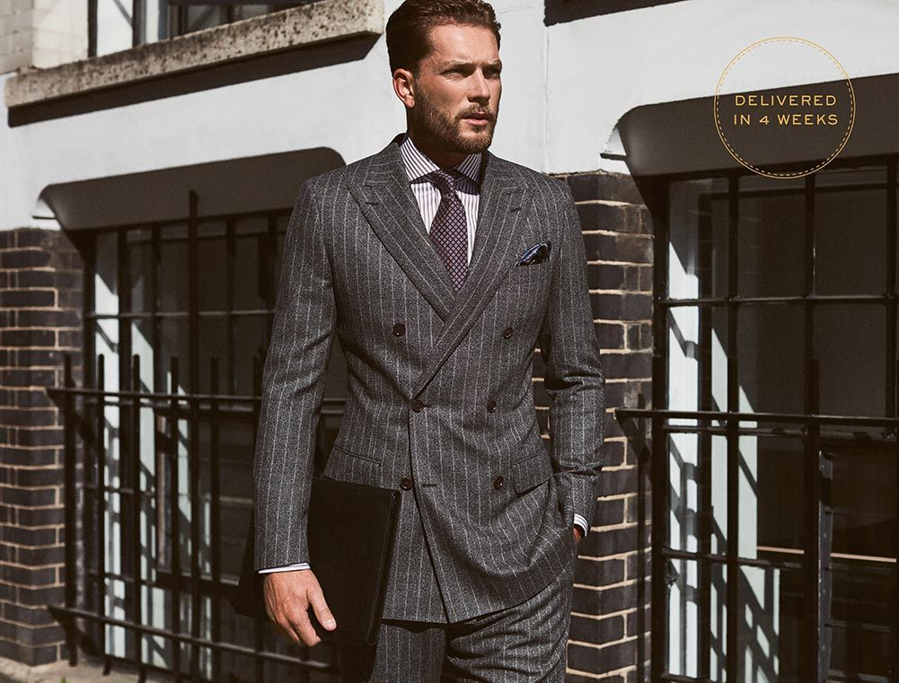
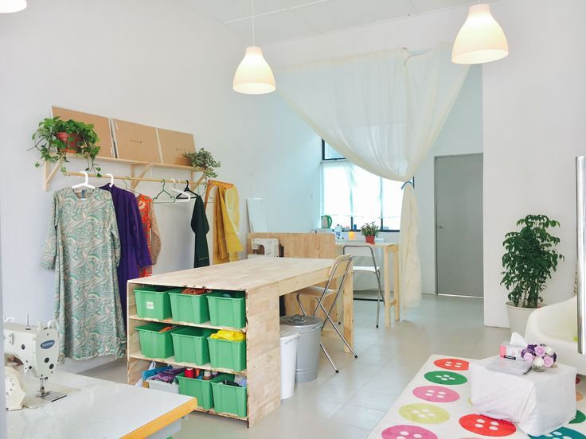

Om Oss
Erfaren skredder i Oslo med over 25 års tradisjon
Erfaren Skredder i Oslo
Vår skredderbutikk i Oslo har i mer enn 25 år levert kvalitetsarbeid innen reparasjon, tilpasning og søm av nye klær. Vi tar stolhet i vårt håndverk og fokuserer på detaljer for å skape skreddersydde løsninger som passer perfekt til kundens behov.
Med en dedikasjon til kvalitet og en forpliktelse til å overgå forventningene, skiller vi oss fra konkurrentene ved vår ekspertise, erfaring og lidenskap for skreddersøm. Besøk oss i Oslo for unike og varige skreddersydde plagg som skiller seg ut.
Våre Verdier
Lidenskap for Håndverk
Vi brenner for skreddersøm og tar stolhet i hver eneste detalj.
Kvalitet i Fokus
Vi bruker kun de beste materialene og teknikker for å sikre holdbarhet.
Personlig Service
Hver kunde får individuell oppmerksomhet og skreddersydde løsninger.

Vår Erfaring
År med Erfaring
Over to og et halvt tiår med kvalitetsarbeid innen skreddersøm og reparasjon.
Fornøyde Kunder
Tusenvis av kunder har fått perfekt passform og kvalitet gjennom årene.
Håndverk
Alt vårt arbeid utføres med tradisjonelle håndverksteknikker og moderne presisjon.
Vår Filosofi
Hos Ararat Skredder tror vi på at klær skal være mer enn bare tekstiler - de skal være en forlengelse av din personlighet og stil. Vårt mål er å skape plagg som ikke bare passer perfekt, men som også reflekterer din unike identitet.
Vi kombinerer tradisjonelle skredderteknikker med moderne forståelse av passform og stil. Hver kunde er unik, og derfor tilpasser vi våre tjenester til dine spesifikke behov og ønsker.
"Kvalitet er aldri et uhell; det er alltid resultatet av høy intensjon, oppriktig innsats, intelligent retning og dyktig utførelse."

Vår Lokasjon
Sentralt i Oslo
Du finner oss i Torggata 8, midt i Oslo sentrum. Vår butikk er lett tilgjengelig med offentlig transport og ligger i hjertet av byen.
